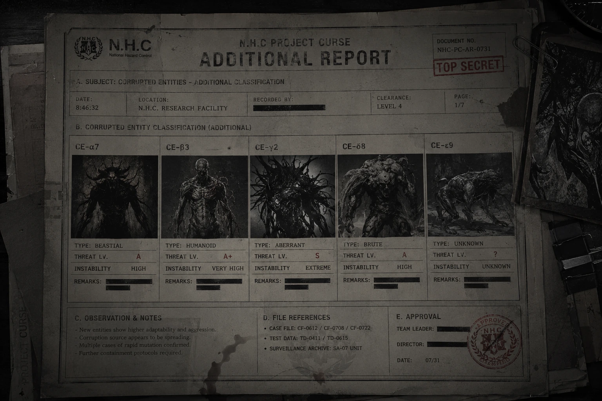

Cults_871104
F.H.C 극비 보안 문서

괴이·오염
타락교, 혈교, 피의 호수, 혈무 제작, 제압된 타락체 등 오컬트 위협 사례를 다루는 기록이다.
01 TERMINAL HANDSHAKEPC-03 단말 접속 확인
02 ARCHIVE SYNC기록 색인 동기화
03 STORAGE MOUNT보관 노드 마운트
04 ACCESS VERIFICATION내부 열람 권한 검증
05 INTEGRITY CHECK기록 무결성 검사
 U.A.C중앙 통제
U.A.C중앙 통제 N.H.C현장 작전
N.H.C현장 작전 A.R.F회수
A.R.F회수 Ash Crew오염 처리
Ash Crew오염 처리 S.I.D조사
S.I.D조사 Ushnoda Cult우시노다교
Ushnoda Cult우시노다교 Haimun하이문
Haimun하이문 C.P.D민간 보호
C.P.D민간 보호 F.H.C극비 연구
F.H.C극비 연구 Amarion아마리온
Amarion아마리온 Syndicate적대 네트워크
Syndicate적대 네트워크관계도는 핵심 연결만 표시한다. 세력별 세부 설명은 세력 정보와 기록 보관서를 기준으로 확인한다.
| 구분 | 관계 | 상태 | 설명 |
|---|---|---|---|
| 우호/협력 | U.A.C ↔ N.H.C | 작전 협력 | U.A.C가 구역 정보와 봉쇄 명령을 제공하고 N.H.C가 현장 전투와 봉쇄를 수행한다. |
| 우호/협력 | U.A.C ↔ S.I.D | 조사 협력 | 실종, 오컬트 범죄, 우시노다교 관련 사건 조사를 위해 기록을 공유한다. |
| 우호/협력 | U.A.C ↔ C.P.D | 민간 통제 | C.P.D는 검문 게이트 운용, 민간인 대피 통제, 피난민 분리, 귀환자 선별 검사를 담당한다. |
| 우호/협력 | N.H.C ↔ A.R.F / Ash Crew | 작전 후처리 | N.H.C가 현장을 확보하면 A.R.F가 회수하고 Ash Crew가 오염된 장비와 오염 잔류물을 처리한다. |
| 감시/불신 | U.A.C ↔ F.H.C | 연구 의존 / 상호 감시 | F.H.C의 연구 자료는 필요하지만 생체 실험과 은폐 가능성 때문에 감시가 유지된다. |
| 감시/불신 | F.H.C ↔ Amarion | 연구 연결 | 아마리온의 제약·생명공학 자료는 F.H.C 연구망과 연결되어 있으나 비인가 실험 기록 때문에 감시된다. |
| 적대/위험 | N.H.C ↔ Syndicate | 적대 / 추적 | 레드울프 계열 이탈 전투조직은 Syndicate 내부 작전 집단으로 통합 기록된다. |
| 적대/위험 | S.I.D ↔ Ushnoda Cult | 감시 / 조사 | 우시노다교는 의식 범죄, 기억 오염, 귀환자 왜곡 사건의 핵심 적대 세력으로 분류된다. |
| 적대/위험 | Ushnoda Cult ↔ Haimun | 의식 / 침투 | 하이문은 도심권 의식, 납치, 귀환자 변질, 레드존 확산과 연결되는 하위 위험 세력으로 감시된다. |
타락교, 혈교, 피의 호수, 혈무 제작, 제압된 타락체 등 오컬트 위협 사례를 다루는 기록이다.

타락 개체, 타락체, 인공 괴이, 변이 개체의 위험 분류를 다루는 기록이다.

피의 호수 관련 피해자와 생체 오염 반응을 다룬 부검 기록이다.

레드존 장기 방치 구역에서 회수된 시간 오염, 혈문, 오염 무전, 구역 판정 기록을 바탕으로 오염 격상과 블랙존화 징후를 분류한 내부 기준 문서.

공식 분류표 밖의 괴이 통칭, 의식성 오염, 귀환자 이상 반응을 정리한 추가 보고서다.

레드존에서 회수된 장비 기록과 미복귀 대원의 마지막 보고를 바탕으로 작성된 N.H.C 내부 규정. 진입, 생존, 오염 회수, 봉쇄 실패, 기록 회수 절차가 현장 대원용으로 정리되어 있다.

피의 호수와 불멸 실험, 현장 촬영 및 통신 임무의 기원 사건 파일이다.

S.I.D 일본 도쿄 지부의 오컬트 사건과 사쿠마 유타 실종을 다루는 보고서다.

F.H.C가 회수한 아마리온 제약 내부 사전교육 영상 복구 기록이다.

N.H.C 1차 작전팀 이탈과 신디케이트 재분류 정황을 다루는 회수 기록이다.

우시노다의 힘을 병기화하려는 계획과 혈무, 생체 병기화 정황을 다룬다.

괴이 유전자, 생체 프린팅, 비인가 유전자 연구를 다루는 기록이다.
타락교와 혈교 기록은 내부 기록면 버튼으로 세부 열람한다.
타락교는 우시노다를 신으로 숭배하는 오염 신앙 계열이다. 이들은 저주의 힘을 신성한 축복으로 받아들이며, 인간의 육체와 정신을 변질시키는 힘을 축복이라 부른다.

신원불명의 신자는 타락교 내부에서 가장 일반적으로 발견되는 신자 유형이다. 타락의 힘을 받아들인 뒤 신체 변형을 겪으며, 인간으로서의 원래 형태를 점차 잃어간다.

가면을 쓴 존재는 타락교의 보호를 받는 특수 괴이 개체다. 본래 야생의 짐승이었으나 우시노다의 타락에 의해 변형된 것으로 추정된다.
타락의 힘을 받아들인 생명체는 점진적인 신체 변형을 겪는다. 초기에는 피부 변색, 체온 변화, 감각 이상, 골격 통증이 보고된다.

혈교는 피의 길을 숭배하는 의식 계열이다. 피를 생명 유지 물질이 아니라 문을 열고, 형태를 만들고, 힘을 전달하는 매개체로 취급한다.

혈액을 이용한 능력은 혈액의 이동 경로를 조정할 수 있는 것으로 확인되었다. 출혈을 막거나, 외부 혈액을 응고시켜 무기와 방어 수단으로 활용한다.

혈무는 혈액을 근접 무기에 덮은 뒤 피의 의식을 통해 강화한 무기를 뜻한다. 의식이 완료된 혈무는 기존 무기보다 높은 공격력과 내구성을 지닌다.

혈액 웅덩이는 혈교 신자들에게 저장소이자 이동 경로로 사용된다. 현장 대응 인원은 혈액 웅덩이를 단순한 오염 물질로 판단해서는 안 된다.

혈액 저장소는 혈액 사용자들의 보급 수단이며, 전투 중 손실된 혈액을 보충하는 용도로 사용된다. 일부 의식에서는 중심 물체로 쓰이기도 한다.

혈무와 화염을 함께 사용한 공격은 타락체의 재생 능력과 신체 변형을 억제하는 데 효과적이다.

타락교 신자는 인간의 외형을 유지하고 있어도 안전하지 않다. 혈교가 남긴 혈액 웅덩이는 단순한 혈흔이 아니며, 이동 경로, 저장소, 덫, 원거리 공격 수단으로 사용될 수 있다.
기록면 단위로 분할된 내부 열람 문서이다.


기록면 단위로 분할된 내부 열람 문서이다.
레드존 장기 방치 구역에서 회수된 시간 오염, 혈문, 오염 무전, 구역 판정 기록을 바탕으로 오염 격상과 블랙존화 징후를 분류한 내부 기준 문서.


공식 분류표에 포함되지 않는 현장 통칭, 의식성 오염, 귀환자 이상 반응을 별도 기록한 추가 보고서다.

본 문서는 타락 개체 분류 보고서를 대체하지 않는다. 공식 분류는 타락 개체, 상위 개체, 이례 개체, 인공 개체, 혼합 개체 기준을 따른다.
이 추가 보고서는 현장에서 공식 분류가 확정되기 전까지 사용되는 통칭, 우시노다교 의식 흔적, 귀환자 이상 반응처럼 여러 문서 사이에 걸쳐 있는 교차 위험 사례를 정리한다.
괴이는 공식 분류명이 아니다. N.H.C 대원, S.I.D 조사관, 민간 생존자는 최초 접촉 단계에서 정체가 확인되지 않은 위험 대상을 임시로 괴이라 부른다.
괴이라는 표현은 타락 개체, 이례 개체, 위장 개체, 의식성 오염자, 이상 반응을 보이는 귀환자까지 넓게 가리킬 수 있다. 따라서 공식 보고서에서는 가능한 한 구체 분류로 전환해야 한다.
우시노다교는 타락 개체 분류 체계에 포함되는 개체군이 아니다. 이들은 오염 구역에서 의식, 표식, 제물 운반, 혈문 준비를 통해 분류 불능 현상과 이례 개체 발생을 유도하는 외부 요인으로 기록된다.
우시노다교 의식에 노출된 인간은 타락 개체처럼 보일 수 있지만, 모든 노출자가 즉시 타락 개체로 분류되는 것은 아니다. S.I.D는 의식 흔적을 조사하고, N.H.C는 개체화가 확인된 경우에만 교전 절차로 전환한다.
붉은 손 표식은 단순한 상징이 아니라 의식 대상 지정, 제물 운반 경로, 또는 봉쇄선 내부 침투 지점을 표시하는 신호로 취급한다. 표식이 확인된 구역은 단독 조사를 금지하고 최소 2개 기관 이상의 확인 절차를 거친다.
귀환자는 레드존 또는 옐로우존에서 실종·사망 처리된 뒤 정상 구역으로 돌아온 민간인이다. 귀환자는 타락 개체가 아니며, 보호와 선별 절차가 우선된다.
다만 일부 귀환자는 기억 왜곡, 시간 오차, 체액 반응, 의식성 표식, 영상 기록 변질을 보이기 때문에 C.P.D 선별 대상 또는 S.I.D 조사 대상으로 격상될 수 있다.
아래 사례는 공식 분류표만으로 즉시 판정하기 어려운 교차 위험이다. 해당 사례는 타락 개체 분류 보고서, 레드존 이상현상 문서, N.H.C 현장 규정, C.P.D 선별 절차와 함께 검토한다.
교차 위험 사례는 단일 기관이 단독으로 종결하지 않는다. C.P.D는 민간인 보호와 격리를 맡고, S.I.D는 진술과 의식 흔적을 확인하며, N.H.C는 개체화 또는 공격성이 확인될 때만 개입한다.
본 추가 보고서의 대상은 공식 분류가 끝나지 않은 회색지대에 속한다. 따라서 현장에서는 보호, 격리, 조사, 교전 전환을 순서대로 판단해야 한다.
레드존에서 회수된 장비 기록과 미복귀 대원의 마지막 보고를 바탕으로 작성된 N.H.C 내부 규정. 진입, 생존, 오염 회수, 봉쇄 실패, 기록 회수 절차가 현장 대원용으로 정리되어 있다.


기록면 단위로 분할된 내부 열람 문서이다.


기록면 단위로 분할된 내부 열람 문서이다.


기록면 단위로 분할된 내부 열람 문서이다.

본 문서는 F.H.C 극비 분석 부서가 회수한 아마리온 제약 내부 사전교육 영상의 복구 기록이다. 해당 영상은 표면적으로는 인류의 미래와 자원 확보를 위한 기술 교육 자료로 제작되었으나, 실제 내용은 현실 외부 공간 접속, 고응축 자원 회수, 생명 연장, 비인가 초자연과학 실험과 연결된 위험 기술 설명 자료로 분류된다.
해당 영상은 F.H.C가 아마리온 제약 내부 자료를 검토하는 과정에서 회수한 사전교육 영상으로 분류된다. 영상은 겉으로는 신규 연구 인력과 협력 인원을 대상으로 한 안내 자료처럼 구성되어 있으나, 일부 구간에서 현실 외부 공간 접속, 고응축 자원 생성, 자기장 기반 공간 왜곡, 비인가 생체 연구와 연결되는 내용이 확인되었다. 영상의 일부 구간은 의도적으로 편집되었거나 손상된 상태이며, 핵심 기술 수치와 실험 조건 일부는 누락되어 있다. F.H.C는 해당 기록을 아마리온 제약이 공식 협력 범위를 넘어선 독자 연구를 진행했을 가능성이 있는 자료로 분류하였다.
아마리온 제약 초자연과학 연구 부서. 198x/xx/08. 해당 영상은 관계자 외 시청 금지이며, 유출될 시 법적 조치로 이어질 수 있으니 주의해야 한다.
저희 주변의 세상은 그동안 수많은 세기를 거치며 많은 변화를 거쳐왔다. 기술의 발전은 언제나 새로운 변수와 함께 찾아왔고, 전쟁, 자연재해, 질병, 자원 고갈, 인구 증가와 같은 문제들은 인류의 수명을 제한하고 사회 기반을 무너뜨리는 주요 원인이 되어왔다. 이러한 현대 사회의 변수들은 앞으로 다가올 미래에 더 큰 위기로 이어질 가능성이 높다. 그래서 아마리온은 언젠가 인류가 감당하지 못할 문제에 대비하기 위해 새로운 방법을 준비했다. 바로 아마리온이 제안하는 차세대 생존 기반 기술이다.
저희가 개발 중인 핵심 기술은 바로 저접근 자기 변형 시스템이다. 낮음 Proximity Magnetic Distortion System은 자기장을 이용하여 현실 세계와 비가시적 공간 사이의 접점을 형성하기 위한 초기형 접속 기술로 설명된다. 이를 통해 일반적인 물리 법칙으로는 접근할 수 없는 공간을 제한적으로 개방하고, 그 내부에서 고응축된 자원을 생성하거나 회수하는 것을 목표로 한다. 기술의 핵심은 안정적인 자기장 변형과 임계값 조절이다.
[영상 손상] ......저접근 자기 변형 시스템...... [편집 흔적 확인] [......응축 및 허용......] [음성 노이즈 발생] ......어느 지점에서......충분히 비례하는...... [영상 일부 삭제됨]
해당 시스템을 통해 아마리온은 새로운 공간을 설계하고, 그 안에서 고응축된 자원을 수집할 수 있다고 설명한다. 현재는 접속 가능한 공간이 제한되어 있지만, 추후에는 접속 범위를 더 크게 확장할 계획으로 보인다. 많은 인원과 화물, 운송 장비, 대형 선박의 출입까지 가능해진다면, 인류는 기존 세계의 한정된 자원에만 의존하지 않아도 된다고 홍보한다. 원활한 자원 수집을 통해 진보적인 기술 연구가 가능해지고, 해당 연구를 통해 인류가 직면한 문제들을 해결할 수 있을 것이라는 내용이 반복된다.
해당 연구는 인류가 앞으로 맞이할 위기를 극복하기 위한 선택입니다. 저희는 기술을 통해 인간의 한계를 극복하고, 미래를 향한 새로운 길을 열고자 합니다. 아마리온은 더 나은 내일을 위해, 오늘의 불가능을 연구합니다.
해당 시스템을 통해 저희는 새로운 공간을 설계하고, 그 내부에서 고응축 상태로 생성된 자원을 수집할 수 있습니다. 현재 해당 공간은 제한된 크기로 유지되고 있으나, 안정화 단계가 진행됨에 따라 더 넓은 구역으로 확장될 예정입니다. 추후에는 인원, 화물, 중장비, 선박 규모의 이동체까지 출입할 수 있도록 확장하는 것이 목표입니다. 이 기술이 완성된다면, 인류는 더 이상 기존 세계의 한정된 자원에만 의존하지 않아도 됩니다.
새로운 공간, 새로운 자원, 새로운 의학, 새로운 생명 연장 기술. 그리고 더 나아가, 인류의 수명을 근본적으로 다시 정의할 수 있는 가능성까지 열릴 것입니다.
저접근 자기 변형 시스템은 현실 세계와 비가시적 공간 사이의 접점을 형성하는 기술로 추정된다. 접점이 불안정할 경우 공간 접속 실패, 현실 왜곡, 통신 장애, 위치 추적 오류, 생체 조직 변형, 비정상 물질 유입, 괴이 출현, 우시노다 현상과 유사한 반응, 화이트존 또는 레드존화 가능성이 발생할 수 있다.
회수된 기록은 생체 변형과 생명 연장 기술에 대한 집착을 보여준다. 해당 연구는 불멸 연구, 생명 연장, 변이 조직 안정화, 괴이 유전자 디지털화, 생체 프린팅, 신체 손상 복원, 타락 진행 억제제, 우시노다의 힘 일부 통제와 연결될 수 있다.
고응축 자원은 일반적인 물질이 아닐 가능성이 있다. 현실 외부 공간에서 회수된 물질이라면 생물학적 오염, 정신 오염, 공간 반응, 괴이 변이, 혈액성 반응 등을 유발할 수 있다. 따라서 고응축 자원은 단순 산업 자원이 아니라 초상 반응성 물질로 분류해야 한다.
회수 영상 내부에서 반복 재생, 시간 불일치, 음성 왜곡, 기록자 신원 불일치가 나타나면 해당 영상 자체를 오염된 장비 또는 CI-S 오염 자료로 재분류한다.
기록면 단위로 분할된 내부 열람 문서이다.
기록면 단위로 분할된 내부 열람 문서이다.
기록면 단위로 분할된 내부 열람 문서이다.